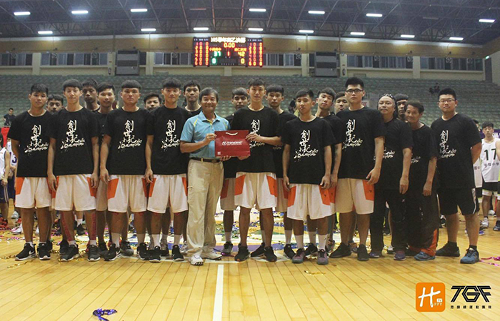

貼文時間：2017/05/15

105 學年度，男子組最終戰，來自台南的善化高中，最終打敗有著紅色閃電之稱 的衛冕軍彰化高中。整年的辛勞在虹霓彩帶飄揚下，畫下完美的句點。
然而，激情與感動過後，隨之而來的即是未來連霸之路的考驗。今年善化高中的主力球員有多達八位高三生，想當然爾，在戰力銜接上，球隊勢必得迅速作出調整，對此黃教練表示：近期將會以小型盃賽培養球員為主，至七月底新血加入、磨合後再參加大型賽事增加心理素質，如:花蓮菁英盃，長耀盃......。
在訓練方針方面，依舊從基本功練起，並持續加強防守能力，這就是善化的勝利方程式，透過窒息式的壓迫防守，轉換快攻，專注每個攻守直到全國冠軍。
另外，教練團在去年 10 月已開始培養二軍起步，讓球員累積一定經驗，接下鋼鐵隊長紀伯昇、神經刀得分手侯銘火炬的是高二隊長-陳淵文，他表示：教練把這個責任賦予給我，那我一定會竭盡所能的帶領著善化，不會讓大家失望。
每個賽季結束時，高一高二的球員必須在一個禮拜後必須讓教練看見他們的小平頭，目的是讓這些球員們理解謙虛，重新來過是何等的意義。而學弟們也對這個文化給予認同感，相信未來我們仍能看見善化保持這項文化~
在接下來的招生、暑期的整兵、團隊實力的銜接，各個考驗著教練團的思維。究竟驍勇善戰的善化，明年又將帶來怎麼樣的驚喜呢？我們拭目以待!!